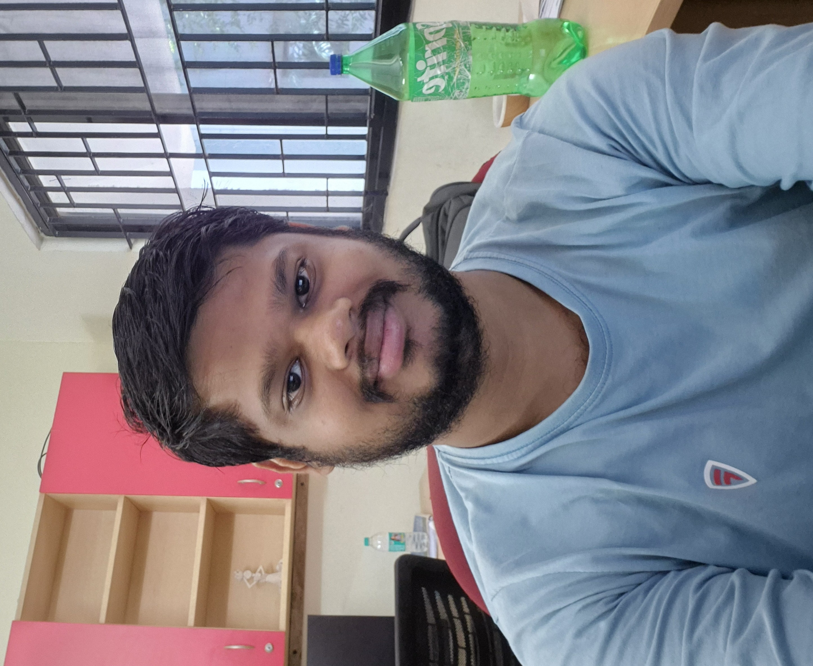

About Me
My interest in physics grew steadily during my undergraduate years, largely inspired by science popularisation lectures and public talks. They encouraged me to explore the subject beyond the classroom and eventually consider a career in research. Along the way, foundational books, online lecture series, and independent reading played a crucial role in nurturing my curiosity and broadening my perspective on the physical world.
My Master's studies marked a definitive turning point in this journey. They gave me a deeper appreciation of theoretical physics and, more importantly, introduced me to research, the process of asking questions whose answers are not already known. This experience motivated me to pursue doctoral studies, where I currently work on problems in lattice QCD and hadron spectroscopy.
Timeline
Achievements
- Ph.D
The Institute of Mathematical Science (2022 - till now) - MSc.
Bose Institute (2019- 2021) - Bachelors
Berhampur University(2015-2018) - Higher Secondary
Tara Tarini College(2013-2015)
- JEST
2019 - Rank 125 (Integrated PhD), 2022 - Rank 31 (PhD) - GATE
2021 - Rank 439 - TIFR GS
2019 (Int. PhD) Cleared the AIE - CSIR JRF
2022 - Rank 53 (LS) - BARC
2022 Cleared the AIE
These milestones reflect different stages of my academic journey. More than the individual results themselves, I value the persistence, curiosity, and continuous learning that have shaped my development as a researcher.